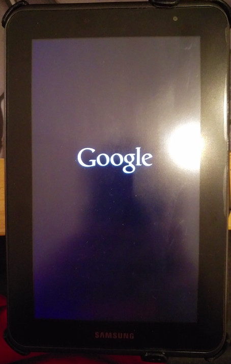

Inital tutorial by Ketut P. Kumajaya, slight updated (also made the extract-script work again).
1. Ueber die App "Terminal Emulator" oder mit "adb shell" erstellt ihr euch ein Abbild eurer originalen param.lfs (sitzt auf folgender Patition: /dev/block/mmcblk0p4)
su
cat /dev/block/mmcblk0p4 > /sdcard/mmcblk0p4.lfs2. Nun kopiert ihr eure param.lfs (mmcblk0p4.lfs) auf euren PC (am Besten schiebt ihr eine Kopie davon noch an eine andere Stelle, sicher ist sicher). Alternativ kann es natuerlich per "adb pull" vom Tab geholt werden.
adb pull /sdcard/mmcblk0p4.lfs3. Nun laded ihr euch das param-tools-new.zip herunter und entpackt es.
unzip param-tools-new.zip4. Nun kopiert ihr eure param.lfs ("mmcblk0p4.lfs") in den "param-tools"-Ordner und erstellt einen neuen Ordner als Arbeitsbereich in den ihr wechselt:
cd param-tools
mkdir work
cd work5. Jetzt muessen wir alle jpg-Bilder aus der param.lfs entpacken, hierzu gebt ihr im Terminal folgendes ein:
../extract-jpg.sh ../mmcblk0p4.lfs6. Nun erstellt ihr euer eigenes Bootlogo, die Datei-Groesse darf allerdings die der Original jpg-Dateien nicht ueberschreiten! (Oder nutzt die Beispiele von Ketut Kumajaya)
7. Im Ordner "work" habt ihr nun saemtliche jpg Dateien. Sucht euch das Original Bootlog, 7 und 10.1 Zoll und speichert es an sicherer Stelle.
8. Nun fuegt euer neues Bootlogo ein, kontrolliert nochmal, dass ihr sie auch richtig benannt habt!
9. Fertig? Ok, nun packen wir die jpg-Dateien wieder zurueck in unser param.lfs (mmcblk0p4.lfs) und geben ihm gleich einen neuen Namen.
../inject-jpg.sh ../mmcblk0p4.lfs ../mmcblk0p4-new.lfs10. Hat alles geklappt? Das ueberpruefen wir, indem wir unser neues param.lfs entpacken, wie oben schon, nur das wir diesmal eine andere Quelle haben (../mmcblk0p4-new.lfs anstatt ../mmcblk0p4.lfs).
Schaut nach, ob eure Bootlogo jpg Dateien enthalten sind, wenn nicht, dann ist etwas schief gegangen (Dateien groesser als Original?)
../extract-jpg.sh ../mmcblk0p4-new.lfs11. Sind die Bootlogo-Dateien da, die ihr eingefuegt hattet, dann koennt ihr nun die neue param.lfs auf die SD-Karte eures Geraetes schieben, oder aber auch per "adb push".
adb push mmcblk0p4-new.lfs /sdcard/mmcblk0p4-new.lfs12. Mit dem Terminal Emulator oder per "adb shell" koennt ihr nun euer neues param.lfs auf euer Geraet (auf /dev/block/mmcblk0p4) einspielen. Danach einmal ins Recovery booten!
su
cat /sdcard/mmcblk0p4-new.lfs > /dev/block/mmcblk0p4
reboot recovery13. Herzlichen Glueckwunsch! Euer neues Bootlogo sollte euch nun beim Starten des Tabs begruessen!
